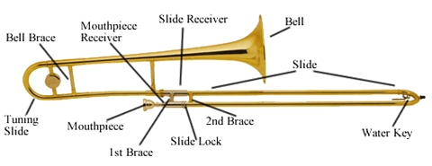

The Trombone
The trombone is a member of the brass family. One of its main characteristics is its slide. The slide on the trombone makes it the only wind instrument that can play glissandi, or slides from note to note. The trombone is a bass voice so it can often be heard playing the bass lines. Because of its size, the trombone can also play quite loudly. Some composers use that quality to achieve a blasting sound. In the orchestra, trombones sit in the last row, in front of percussion. Most commonly, they are on stage left with the other bass voices.
Jokes
How can you tell which kid on the playground has the trombonist father?
They can't swing and complain about the slide.